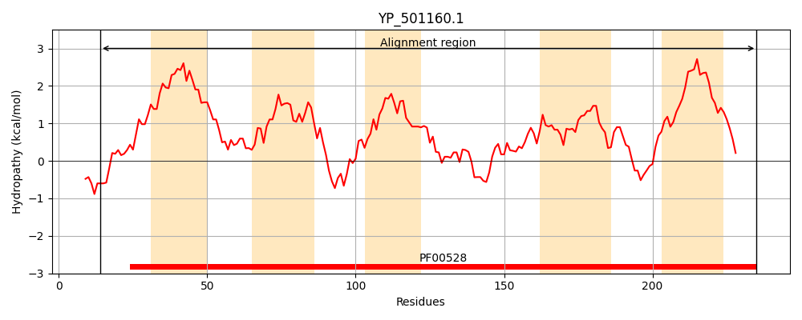
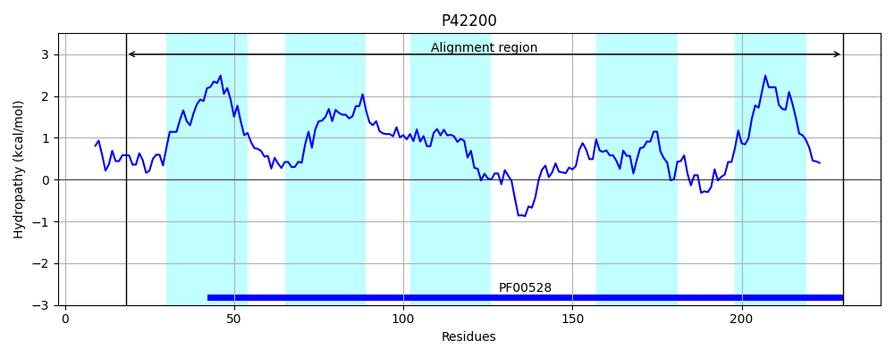
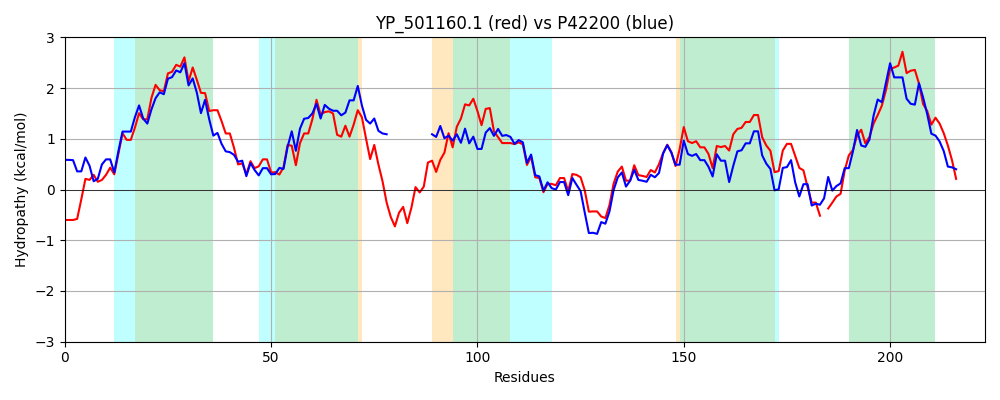

Hit Accession: P42200
Hit TCID: 3.A.1.3.14
Hit Description: gnl|BL_ORD_ID|10446 gnl|TC-DB|P42200|3.A.1.3.14 Probable amino-acid ABC transporter permease protein yckJ - Bacillus subtilis.
Mach Len: 223
e:0.000000
Query TMS Count : 5
Hit TMS Count: 5
TMS-Overlap Score: 4.500000
Predicted Substrates:CHEBI:4052;cystine
BLAST Alignment:
Score: 585 , Bit scores: 229 bits, E-value: 3.1e-76, Alignment length: 223, Percentage identity: 53
Query: 14 DAAKQAFGPMLEGLVKYSIPITLVTFVLGLIIALFTALMRISTSKILRSISRVYVSIIRGTPMIVQLFIIFYGIPELGRLLTNDADNQWTLAPVVAAIIGLSLNVGAYASEIIRGGIISIPKGQTEAAYSIGMTYGQTIQRIILPQAIRVSIPALGNTFLSLIKDTSLLGFILVAEMFRKAQEV-ASTTYEYLTIYVLVALMYWVVCFIISIIQGIYESYIER 235
D +Q+F P+L G + Y+IP+T+++F+ G+I+AL TAL R+S + LR + VYVS IRGTP++VQLFIIFY P TL P +A+I SLNVGAYASEIIR I+S+PKGQ EA Y+IGMT+ +T+ R+ILPQA RVSIP L NTF+SLIKDTSL ILVAE+FRKAQE+ A + L IY+ A +YW++CF++S++Q + E ++R
Sbjct: 18 DLVQQSFWPILSGGIYYTIPLTILSFIFGMILALITALARMSKVRPLRWVFSVYVSAIRGTPLLVQLFIIFYLFPAFNV----------TLDPFPSAVIAFSLNVGAYASEIIRASILSVPKGQWEAGYTIGMTHQKTLFRVILPQAFRVSIPPLSNTFISLIKDTSLASQILVAELFRKAQEIGARNLDQILVIYIEAAFIYWIICFLLSLVQHVIERRLDR 230 | Protein Hydropathy Plots: |
|---|
|  |  |
Pairwise Alignment-Hydropathy Plot:
|
|---|
|  |